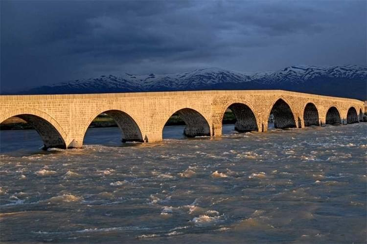
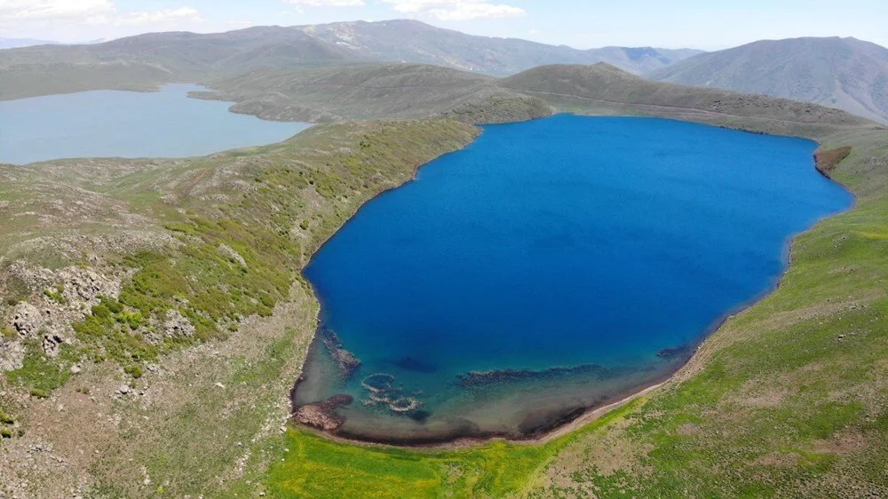

Muş'un ilk çağ tarihinde Urartular'ı Medler takip etti. Günümüz İran Azerbaycan'ında yaşamakta olan Medler, Asur Devleti'ni ortadan kaldırdıktan (MÖ 609) sonra Muş Ovası'na yöneldiler. Medler, Kimmer-İskit saldırılarından yorgun düşen Urartu Devleti'ni, tarih sahnesinden silmekte zorlukla karşılaşmadılar.

1893 yılı Osmanlı nüfus sayımına göre Muş Sancağı'nda yaşayan kişi sayısı 99.560 kişidir. Bunların çoğunluğu (%54) Ermenilerden oluşmaktadır. Muş'taki toplam Ermeni nüfusu 53.776 kişiyi bulmaktadır. Muş'taki Kürt ve Türk nüfusu ise toplam 42.647 kişidir (%43).